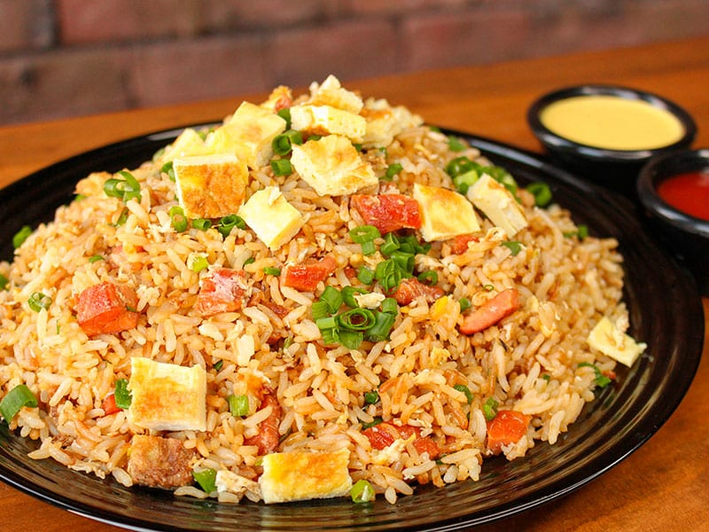

Pagina Principal
Chaufa de Pollo

Descripcion
Según la famosa guía gastronómica Taste Atlas, nuestro país tiene el mejor arroz chaufa del mundo. El arroz chaufa es uno de esos
platos que sintetizan ese espíritu de apropiación cultural
y fusión que identifica nuestra gastronomía; específicamente la cocina cantonesa que llegó con la inmigración china en el siglo XIX.
Consiste en arroz frito mezclado con verduras, incluida la cebolla, huevo, pollo, sillao en fuego alto.
Esta versión de pollo es la más simple y cotidiana del chaufa. El chaufa casero; el del menú. A continuación, la receta.
Ingredientes
- 4 tazas de arroz cocido
- 300 gramos de pechuga de pollo
- 3 huevos
- 1 taza de cebolla china picada
- 1 cucharadita de kion picado finamente
- 1 chucaradita de aceita de ajonoli
- Aceite, Sal y Sillao
Preparacion
- Batir los huevos y freírlos a manera de tortilla. Cortar la tortilla en cuadrados. Reservar.
- Cortar la pechuga de pollo en cubos
- En una sarten con aceite caliente, freir a fuego alto la pechuga de pollo con el kion y sal al gusto
- Agregar el arroz cocido, freírlo y echar el sillao. Incorporar bien.
- Añadir el frejol chino, la cebolla china, el aceite de ajonjolí y el huevo reservado. Saltear y rectificar la sazón.
- Servir caliente. Acompañar con salsa de tamarindo.